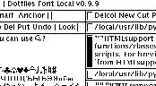

Introduction to Wily
What is it?
Wily is a mouse-oriented, text-based working environment for
programmers. It lets you interact with your files, directories and
other programs through mouse and keyboard operations on plain text.
./configure; make
should compile the program with no problems on most
Unixes with X Windows.
What does it look like?

Wily divides the screen into columns, and the columns
into windows. Each window has a one-line tag
which holds the name of the window, and some useful
bits of text. Text can be displayed in either proportional
or fixed-width fonts. Unicode fonts are supported.
Text is read and written in UTF8 format, which is backwards
compatible with 7-bit ASCII. The screen shot demonstrates
some of these features. Directories are tabulated.
What's good about it?
Wily's most attractive qualities are simplicity,
power and speed.
Simplicity
The interface is simple to learn.
A one page user manual
gives a reasonably complete description of how to use Wily.
The implementation is also reasonably simple:
wc -l *.[ch] gives a total of 8832 lines.
Power
Wily's simplicity derives from having few features.
However, these features are quite general, have few
complicating exceptions and combine well together.
Every piece of text on screen can be interacted
with in exactly the same way.
Part of Wily's power emerges from being able to combine
a few simple primitives in arbitrary combinations
(like chess or go).
Wily also encourages the use of other tools from the Unix
toolchest. It is easy to build a set of (for example) HTML
processing tools that work well with Wily.
Speed
With some practice, a decent mouse and mousepad,
a Wily user can be very quick. The author is moved
almost to tears of frustration using many other editors.
You need never retype anything while using Wily.
Interesting Features
Backups
Whenever a window containing changes not refleted on disk is deleted,
Wily first makes a backup of the file, instead of initiating an "are you sure?"
dialog. This seems not only quicker but safer than forcing a dialog, as
occasionally the user might give the wrong answer to a dialog, whereas
with this system a backup is always there.
Proportional text by default
This is much easier to read. On the rare occasions you need
to drop back to monospace, it can be done with a mouse-click.
Mouse "chords"
i.e. using a combination of mouse buttons for Cut and Paste.
This is way cool.
Unicode text
This is becoming more expected than unusual.
Drawbacks and problems
Wily is certainly not for everyone.
The main complaints against Wily, with some responses,
follow:
- You have to use the mouse too much
- The mouse is currently the best way to quickly select
an arbitrary piece of text on screen. Mostly you're
either using the mouse exclusively or the keyboard exclusively.
It is quite rare to "thrash" between the two.
- There aren't enough control keys/function keys
- go away
- There's no syntax highlighting
- Wily is for editing plain text
- I have to use an external program to do global replace?
- this is pretty simple and reasonably efficient
- Wily may someday include this functionality
- A builtin extension language would be more efficient than
using external programs
- Probably. The current system is much simpler and is
efficient enough so far.
- It doesn't seem very intuitive
- In other words, it doesn't seem very familiar, at first.
Of course. This is a necessary price of being very different.
On the other hand, Wily is so simple it takes very little time
to become familiar with it.
gary@cs.su.oz.au